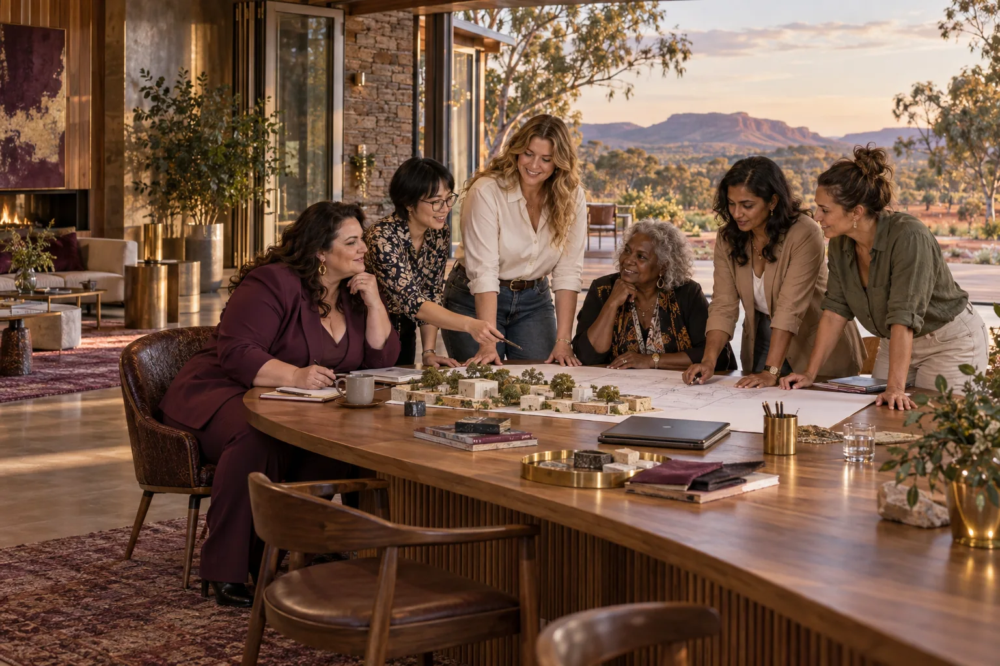

A world of ideas.
Your own direction.
Connect Queens, enterprise fields and startup ideas. Shape a pathway around what matters to you.
Follow an idea.
Find your people and your next step.
Queens, enterprise categories and startup ideas belong to one connected learning network. Choose a field to see relevant mentors and enterprise briefs. Add anything that interests you to your own pathway below.
Your pathway stays in this browser. Download a copy when you want to keep it or share it. There are no member accounts or public profiles in this planning tool.
Find the connections.
Choose a field to reveal its Queens, shared capabilities and startup ideas.
Your pathway. Your choices.
Add Queens, categories and startup ideas as you explore. Nothing is chosen for you.
Your pathway is empty. Visit a Queen or enterprise page and choose “Add to my pathway”.
A useful next conversation.
Take your pathway to someone with relevant experience. Agree a first result, who needs to be involved, what it will cost and when to review it. The site helps you prepare; the relationships and decisions are yours.
Find your way into the proposal →